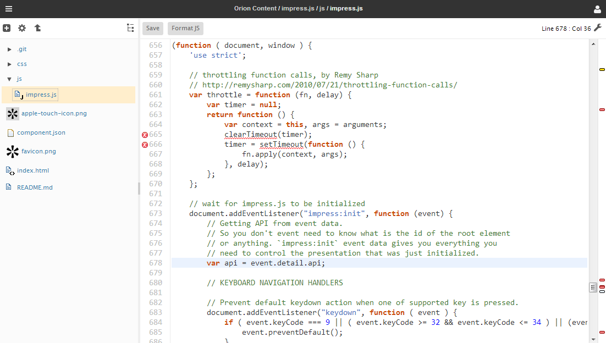
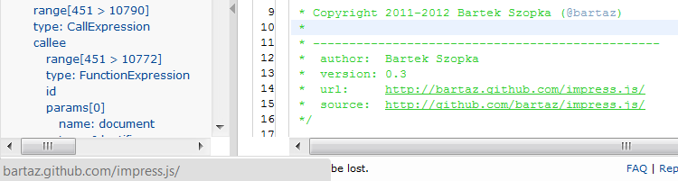
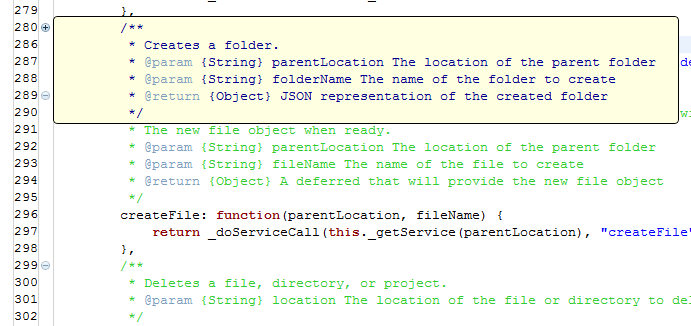
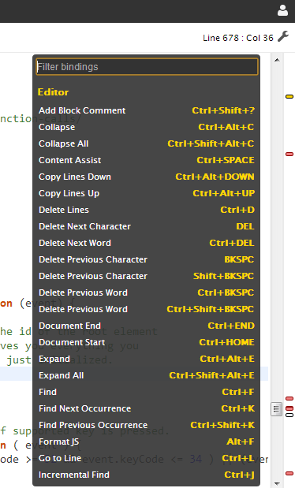
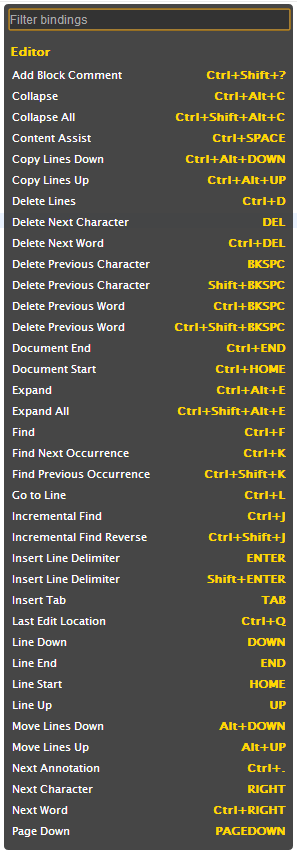
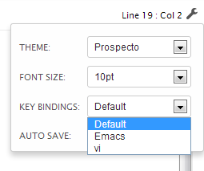
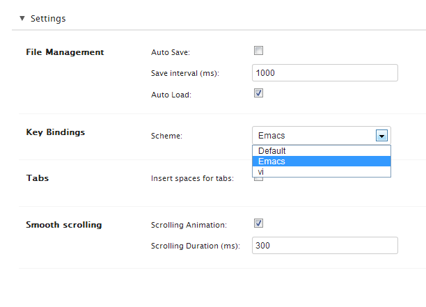
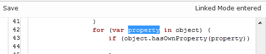
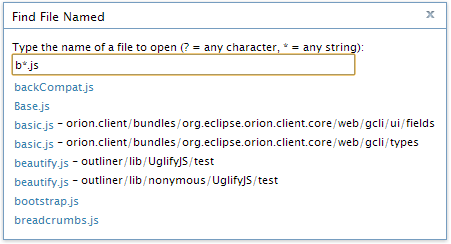

Navigate to the Coding page by clicking any file in the Navigator page that has a corresponding Orion editor. This page is comprised mainly of an editor area, and a collapsible navigator / code outline section on the left hand side. Error markers are shown in the gutter to the left of the line numbers, as underline squiggles in the text, and a birds-eye view of errors is shown next to the scroll bar on the right. The name of the file being edited, and the current line and column information are shown in the title area at the top of the page. Editor fonts and colors can be customized from the Settings page.

When editing JavaScript, comments containing the word "TODO" will also appear as annotations in the ruler and overview bars. Hover on the annotation to see the comment associated with the TODO statement.
You can navigate into hyperlinks in the editor by holding down the Ctrl key (Cmd on Mac).

The Orion editor supports folding sections of a file that you aren't interested in looking at. For example, you can fold comments in JavaScript files. Folding sections are shown as little plus or minus icons in the editor ruler. Hovering on the annotation for a folded section will let you peek at hidden the contents.

The editor supports many of the typical key bindings from the Eclipse editor. To find out what key bindings are available select Options > Keyboard Shortcuts or type Alt+Shift+? (or Ctrl+Shift+? on Mac OS X).

The editor has a default set of keybindings. As part of the 3.0 release, an initial set of keybindings have been added for vi and emacs. These can be accessed through either the local editor settings combo or from the editor settings page.



It is possible to choose a keybinding set from either the local settings page:

Or from the Editor settings page:

Syntax highlighting for several languages is built into the Orion editor. In particular there is support for JavaScript, HTML, CSS, and Java. A CodeMirror plugin is available that provides syntax highlighting for a large variety of other languages.
Basic content assist is currently supported in JavaScript, CSS, and HTML files. Other file types may be supported depending on what plugins you have installed. Type Ctrl+Space to open content assist at the current cursor position in the editor. Some content assist proposals require you to fill in certain variables after the proposal is selected. For example, if you select the "for..in" proposal in JavaScript, the editor enters a linked mode to let you fill in the property name and object to be iterated.

Type in an appropriate value for the variable, and hit Tab key to move to the next variable. When you are finished, exit linked mode by hitting Enter.
The Outline pane to the left of the editor shows the structure of the file you are editing. Click entries in the outline to jump to the corresponding location in the editor. When not in use, you can collapse the Outline pane using Ctrl+O.
There are plugins available that define additional outline capabilities for various file types. Click Get Plugins in the top banner to find additional outline plugins for HTML and JavaScript. When multiple outlines are available, a drop-down menu appears at the top of the outline, allowing you to select a particular outline presentation:

There are several ways to perform searches in the editor (some key bindings may be different on Mac OS):

This document is maintained in a collaborative wiki. If you wish to update or modify this document please visit http://wiki.eclipse.org/Orion/Documentation/User_Guide/Reference/Coding_page